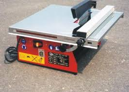
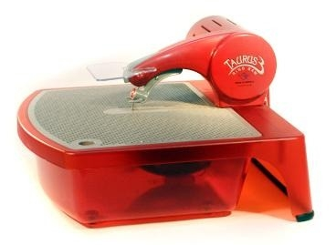
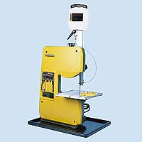

|
Nämä eivät varsinaisesti ole lasin leikkausta. Ne kuitenkin täydentävät muotojen valikoimaa jota ei leikkaamalla saa tehtyä. Timanttiterän jäähdytys on tärkeää näissä kaikissa.
3.2.4. SahausSirkkeli tekee mahdolliseksi melko paksujen valujen suoraviivaisen palottelun. Olen myös nakertanut sirkkelillä pyöreän reunan pala kerrallaan. Sirkkelin terässä on timanttipintaa myös sivulla. Sitä vasten voi hioa viimeiset kulmat pois.Halvan laattasirkkelin terä on karkea. Työstää nopeasti mutta jättää rosoisen reunan joka on hiottava. Korukivien hiojat käyttävät ohuempaa terää joka jättää siistin jäljen. Lasityössä se vaatii tukilaipat kahta puolen. Laatasirkkelissä ja Taurus-sahassa (tm))on vesitila, jonka kautta terä kulkee. Sinne kertyy lasijauhoa, joka kuivuu vaikeasti poistettavaksi. Huuhtele vesitila kyllin usein. Vannesaha rai rengassaha (Taurus) sallivat melko tiukkojen kaarien teon. Vannesahaa varten pitää hankkia tai rakentaa systeemi joka syöttää vettä työkohtaan. Molemmissa tyypeissä on hyvin ohut terä. Kallis terä katkeaa helposti jos työkappaletta syöttää liian nopeasti. Tauruksen lankaterä on timanttipinnoitettu joka puolelta, sillä voi sahata kaikkiin suuntiin. suositeltavaa on kuitenkin kääntää työkappaletta niin että syöttö on terää kohti. Tauruksen lankateraa ohjaavat rungon sisällä muovirullat, j otka ovat kulutustavaraa. Kumpikin sahamalli tarjoaa mahdollisuuden teipata kaksi lasia tiukasti yhteen ja sillä tavoin saada tarkka sovitus palojen väliin. |
 Laattasirkkeli  Taurus saha  Vannesaha jossa on vedensyöttö |
| <- edellinen sivu
viivottimet ja harpit <- jakson alkuun <- Etusivulle |
Copyright 2007,2014 Lauri Levanto ;URL http://lauri.lsd.dk/lasi/Copyright |
seuraava sivu -> Viirun vetäminen |